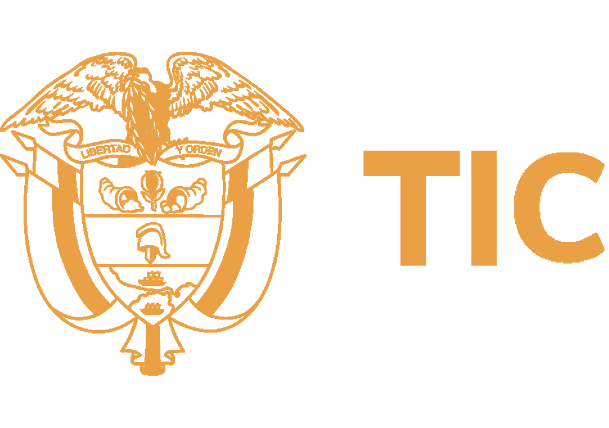
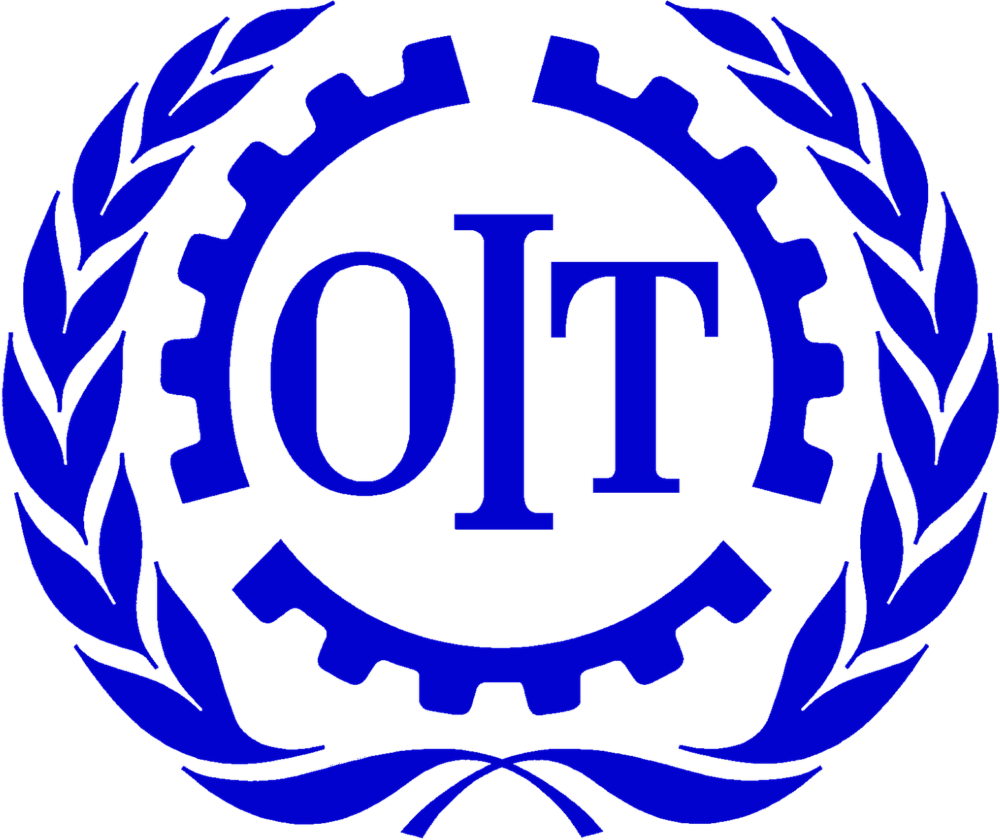
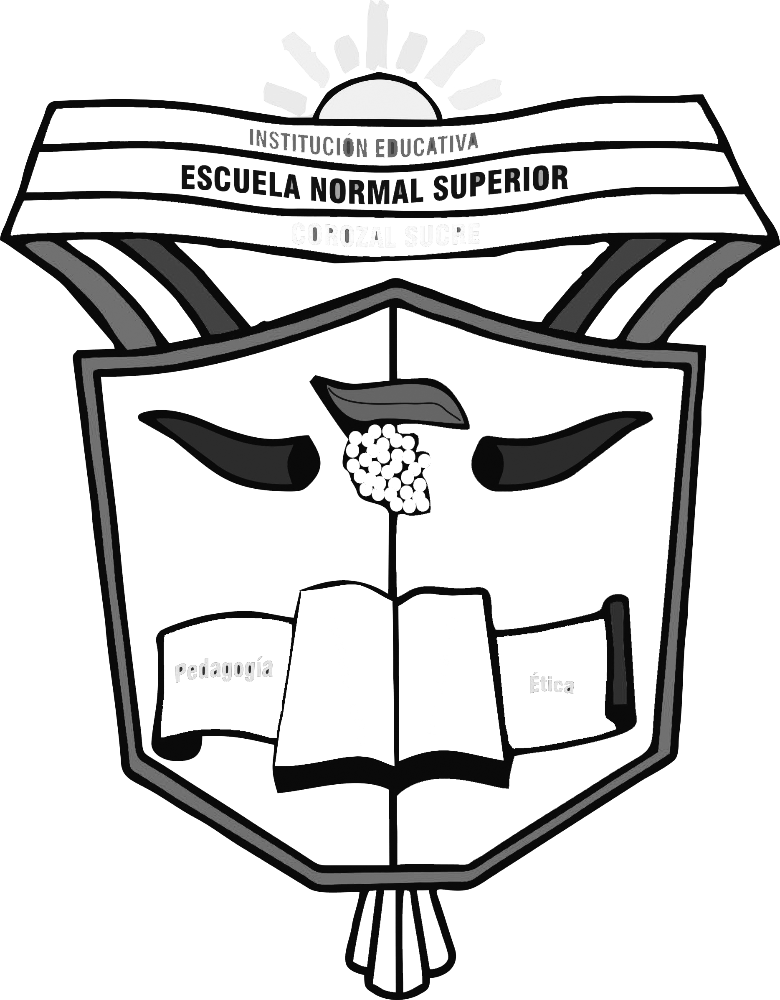
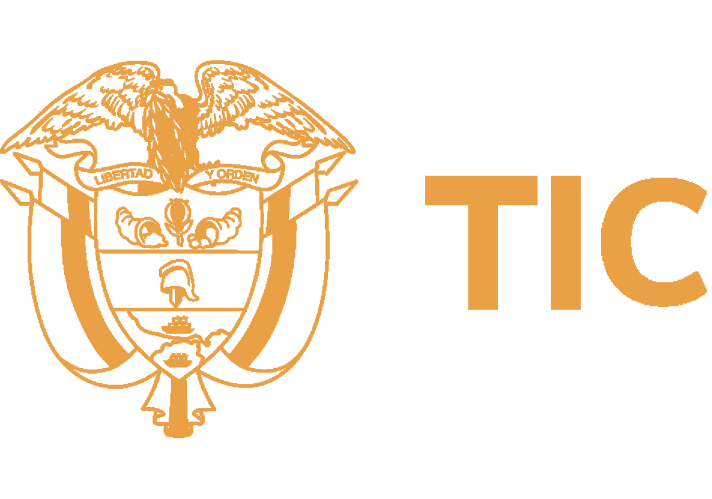
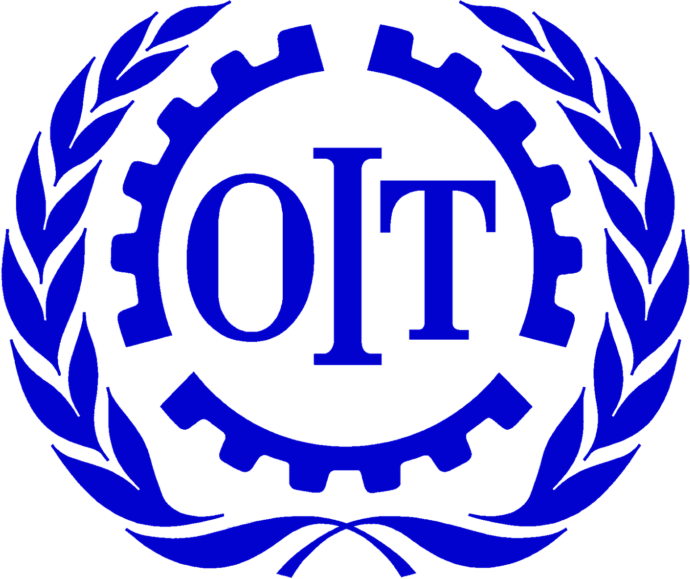
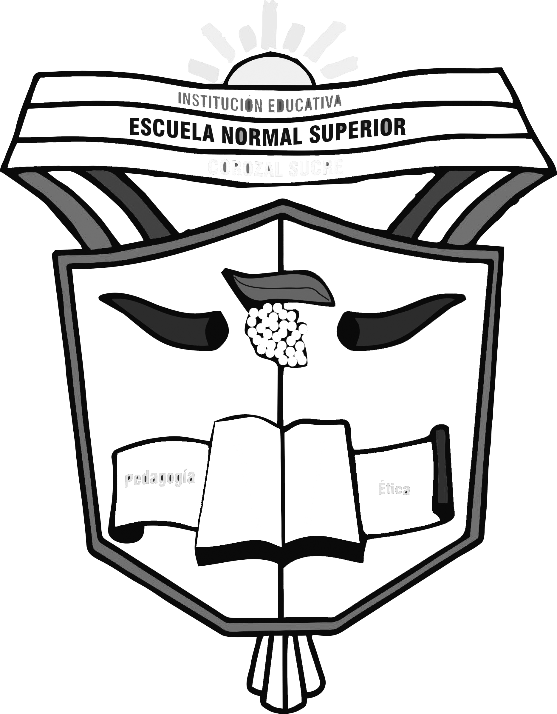
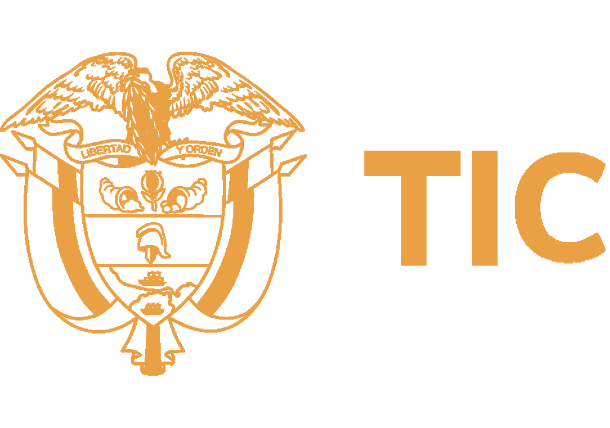
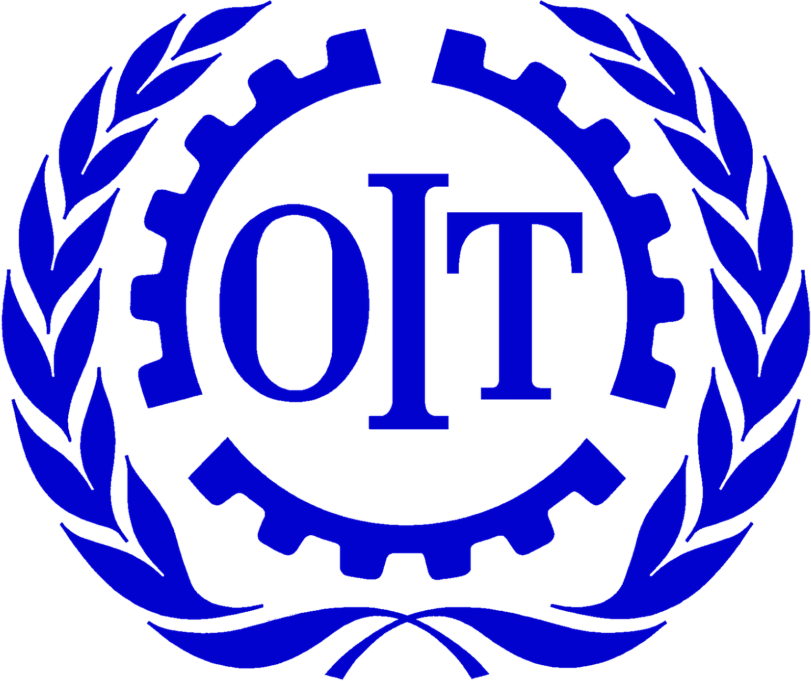
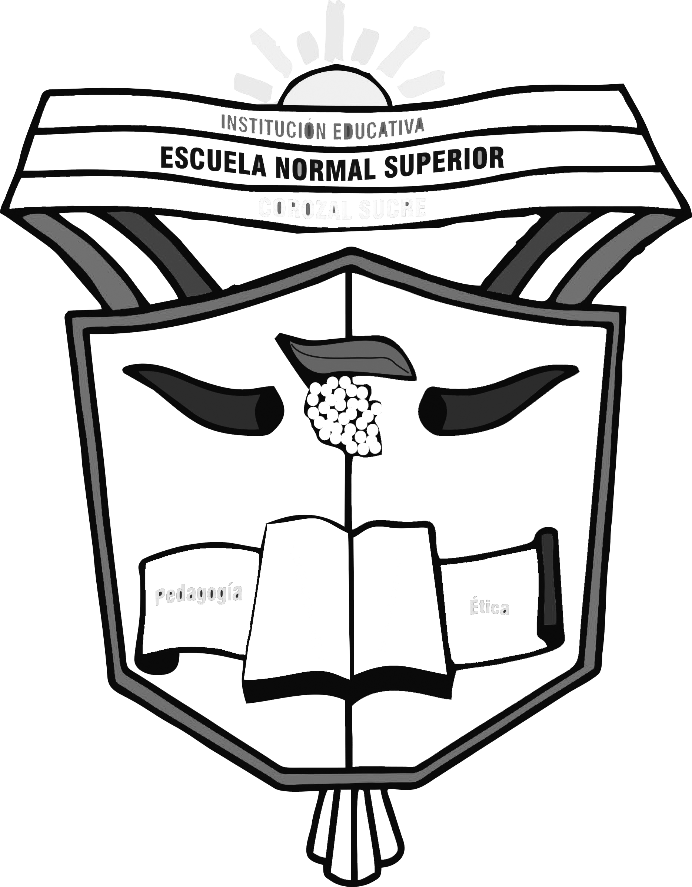
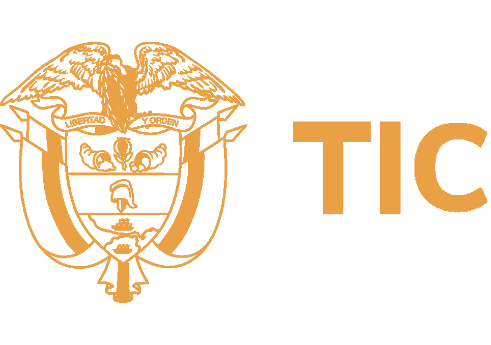
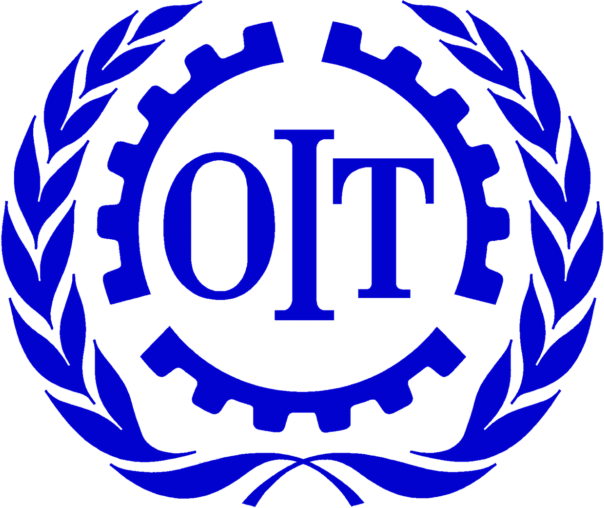
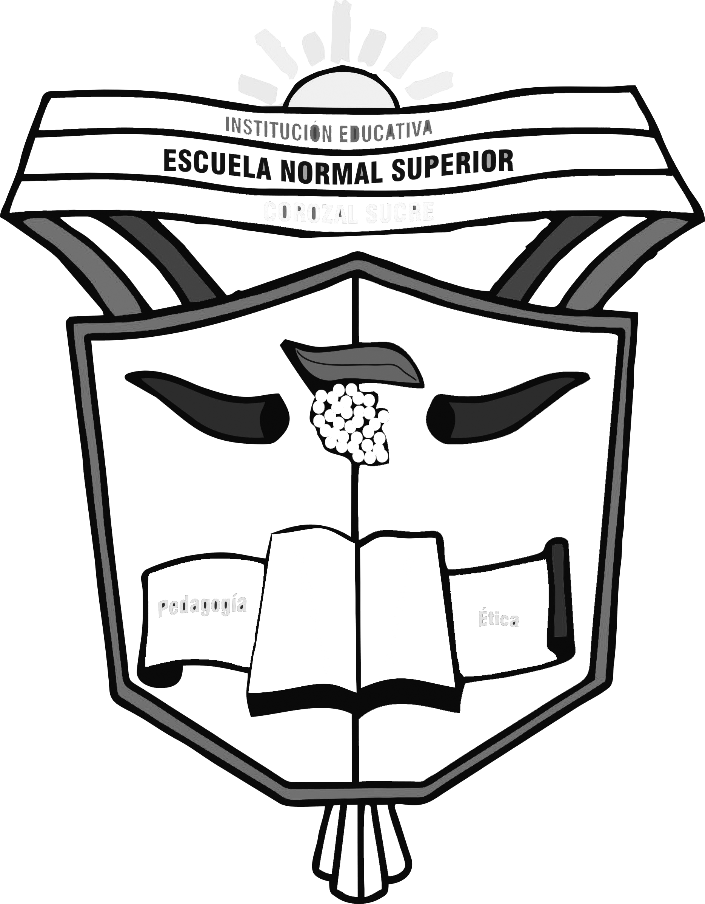
Bienvenidos a la Feria Empresarial del proyecto SENATIC, una iniciativa del SENA en articulación con la Escuela Normal Superior de Corozal, con el apoyo de la OIT y el MinTIC. Un espacio para que nuestros aprendices presenten sus 24 proyectos de base tecnológica que transforman ideas en soluciones digitales.
Ver Proyectos